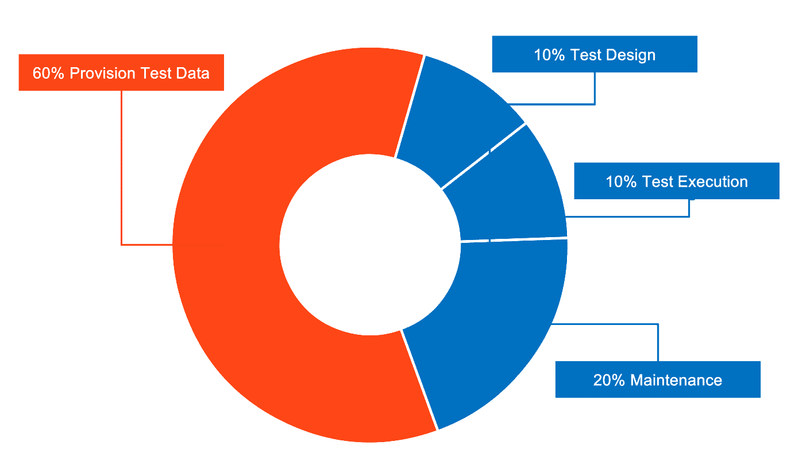

Data-Driven Testing and Test Data Management¶
Introduction to data-driven testing¶
Learning objectives by the end of this chapter, you will be able to:
- Understand data-driven testing.
- Manage test data.
- Compare the six different data source options available in UiPath:
- File (Excel/JSON)
- Generate with Autopilot (AI-powered)
- Data Service (Automation Cloud)
- Existing Data (project-based)
- Auto Generate (path coverage)
- Test Data Queues (legacy, existing tenants only)
- Create data-driven test cases using multiple data sources.
- Apply best practices for test data management.
Data-driven testing lets you execute a single test case multiple times with different input datasets, instead of creating a separate test case for every scenario.
✅ Test multiple scenarios efficiently
✅ Separate test logic from test data
✅ Easily add new test variations
✅ Achieve better test coverage
Prerequisites
Orchestrator 2022.4 or later is required to use data-driven testing functionality.
Test data management¶
Test data management covers three main steps:
✅ Designing the appropriate data for each test scenario
✅ Provisioning that data into the environment where tests will run
✅ Consuming the data during test execution
This process can consume up to 50% of testing effort. Test data management presents the following challenges:

Data creation approaches¶
Three primary strategies exist for creating test data:
- GDPR
- Low coverage
- Outdated
- Complex customization
- Expensive
- High coverage
- Reduced privacy risk
- Easy reproduction
Optional topics
Generating synthetic test data (using Activities and Autopilot) and Auto Generate for path coverage are covered as optional topics in Module 3 — Additional Topics.
Data Driven Test Case¶
A Data Driven Test Case is a specification of the multiple inputs, execution conditions, testing procedure, and expected results.
Creating a Data Driven Test Case¶
To create a Data Driven Test Case, navigate to an already created Test Case and right click. You should now be able to select Add Test Data.

The six data source options¶
✅ File (Excel/JSON) for prepared data
✅ Generate with Autopilot using AI capabilities
✅ Data Service for consolidated cloud-based management
✅ Existing Data from project folders
✅ Auto Generate for path coverage optimization
✅ Test Data Queues for queue-based data management
Test Data Queues not covered in this exercise
Test Data Queues are not available for new tenants and are no longer covered as a hands-on exercise here. They remain supported for existing tenants that already use them.
When you create a data-driven test case, the Import Data Variation Source wizard guides you through selecting your preferred data source. The following image showcases the interface where you'll choose and configure your data source option:

Hands-on Practice¶
We'll explore four approaches to data-driven test case creation through hands-on exercises. Each tab covers one data source type with step-by-step instructions to complete your exercise.
File-based data sources let you drive a test case from an Excel spreadsheet or JSON file that you prepare and maintain outside of UiPath.
Exercise 1: Create a data-driven test case using Excel
UiBankTestData.xlsx (9.2 KB) — sample data for this exercise
- Navigate to an existing test case.
- Right-click and select Add Test Data.
- Choose the Excel or JSON file containing your input data.
- Use the UiBankTestData.xlsx file above, matching the UiBank Loans application structure.
Generate with Autopilot uses AI to create contextually relevant test data directly within Studio, based on a natural language prompt you provide.
Exercise 2: Generate test data by giving instructions in natural language
- Create a new test case containing three arguments:
CountryName,CityName, andIBAN. - Access Autopilot and enter this prompt: "Generate a list of 20 European countries with names typical to the country, cities from the country, and IBANs in the country's format."
- Review and import the generated test data.
Data Service (transitioning to the Data Fabric naming) enables centralized entity management, collaboration, and data variation updates without republishing test cases.
Exercise 3: Create a data-driven test case using Data Service
- Create a new data-driven test case for the UiBank create loan flow.
- Link it to the
UiBankLoanDataentity. - Map workflow arguments to the Data Service entity.
- Add a Verify activity to compare actual versus expected rate.
- Execute the test case and observe the data variations.
Existing data is a built-in data source option that allows you to link a test case to an existing JSON or Excel dataset that has already been stored directly inside your project's Test Data folder. This approach separates test logic from execution data, allowing you to run the same automated workflow against multiple variations without manually changing variables.
Exercise 4: Create a data-driven test case using Existing Data
- Locate the data file: You will find the JSON file under the Test Data folder.
- Create a data-driven test case: in Studio's Project panel, right-click on your workflow or folder, select Add, and choose Data-Driven Test Case. Provide a descriptive name for your test case.
- Select the data source: in the configuration window, select Existing data from the list of data source types.
Comparing Data Storage Approaches¶
Each data source method has distinct advantages and limitations. Choose the approach that best aligns with your project requirements:
- Ease of Use: Excel is widely used and requires little training as it's a familiar tool for most users.
- Readily Available Tool: No additional systems or licenses needed.
- Static Nature of Data: Excel files provide static test data. Any modifications require re-importing the updated file and re-publishing test cases to Orchestrator, which slows down the process and makes it unsustainable for dynamic testing.
- Limited Access Control: Excel doesn't inherently offer robust access control or security features.
- Ease of Setup and Maintenance: Using existing data simplifies the setup process as you don't need to generate new data for each test case. You can focus on implementing test cases instead of spending time creating datasets.
- Data Obsolescence and Maintenance Overhead: Existing data tends to become outdated quickly. Testers may need to frequently update the test data by manually making changes to files, which can introduce human error and slow down testing cycles.
- No-code, seamless, fully integrated
- Secure centralized storage
- Direct Studio integration—no external tools needed
- Requires initial configuration
- 10MB file size limit
Summary¶
By completing these exercises, you've learned how to create data-driven test cases using four different data source approaches. This flexibility allows you to choose the method that best fits your project's needs—whether it's Excel files for simplicity, Autopilot for AI-generated data, Data Service for centralized management, or Existing Data for project-based datasets.